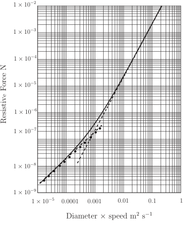

Long description: keithlog

Alt text: The graph displays the resistive force as a function of the product of diameter and speed, comparing three theoretical models against experimental data points.
This description was generated by AI and has not been verified by a human. If you spot an error, please use the feedback link below.
- The vertical axis, labeled "Resistive Force N," is on a logarithmic scale, ranging from \(1 \times 10^{-9}\) N to \(1 \times 10^{-2}\) N.
- The horizontal axis, labeled "Diameter \(\times\) speed \(\text{m}^2 \text{s}^{-1}\)," is also on a logarithmic scale, ranging from \(1 \times 10^{-5}\) to \(1\) \(\text{m}^2 \text{s}^{-1}\).
- Three theoretical curves are plotted: a solid line representing Equation (3.10), a broken line representing the approximation from Equation (3.11), and a dash-dot line representing the approximation from Equation (3.12).
- Scattered black dots are plotted on the graph, representing measured data points for a sphere with a diameter of 0.01 meters.
- All three plotted lines and the data points generally show an increasing, linear relationship on the log-log plot, indicating that the resistive force is proportional to the product of the diameter and speed.